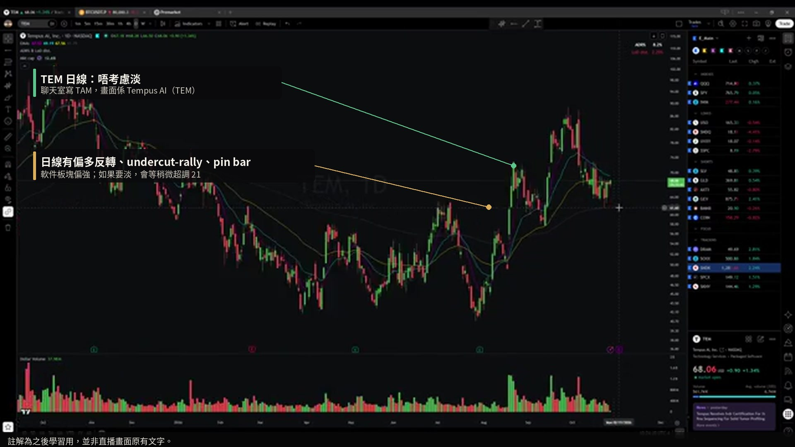

概要
反覆拒絕均線，唔等於就要淡
1:03:35 有人問 TAM／TEM 今日好唔好淡：已經多次被 10 同 15 EMA 拒絕，但會唔會反而令向上突破更有機會。佢而家唔考慮淡。首先軟件仍係而家偏強嘅板塊之一；週線企得幾好，日線有偏多反轉，之後 undercut and rally、pin bar。呢度有少少亂、波動偏高，佢唔鍾意在呢度淡。如果一定要淡，會等稍微超調 21。
聊天室同轉寫寫成 TAM，畫面係 Tempus AI（TEM）。
圖一
TEM 日線：唔考慮淡
直播 1:04:30

原話
Do you think TAM has a good short setup today? It has been rejected by the 10 and 15 EMAs several times. Or could those repeated rejections actually make an upside breakout more likely? Right now, I won't consider shorting it. First, it's one of the strongest sector right now, softwares, and like on the weekly it's holding up pretty well, and on the daily we got like the better bullish reversal and then the undercut and rally, the pin bar candle. I don't like shorting here. It's a little bit too choppy, the volatility a little bit too high down here. If I have to short, I will wait for maybe a little bit overshoot the 21 would be the best, like somewhere here. So maybe a little bit overshoot, but I just don't consider it.
你覺得 TAM 今日好唔好淡？已經多次被 10 同 15 EMA 拒絕。定係呢啲反覆拒絕反而令向上突破更有機會？而家我唔會考慮淡佢。首先，軟件而家係偏強嘅板塊之一；週線企得幾好，日線有比較好嘅偏多反轉，之後 undercut and rally、pin bar。我唔鍾意在呢度淡。呢度有少少亂，波動亦偏高。如果我一定要淡，我會等大概稍微超調 21，會係最好，就係大概呢一帶。所以可能稍微超調，但我就唔考慮。
聊天室同轉寫寫成 TAM；畫面係 Tempus AI, Inc.（TEM），以畫面為準。口中 10、15、21 EMA，圖例冇印週期，唔擅自改寫成 9 或者 50。
點樣讀
反覆拒絕均線，喺佢呢度唔等於自動變成淡倉；佢先睇板塊強弱、週線同日線反轉形態。
畫面公司名同「Packaged Software」只當圖上文字。
附註
注意事項
- Whisper 有一句聽到 but biotech softwares；主句仍然係 softwares 板塊偏強。唔把生物科技寫成事實。